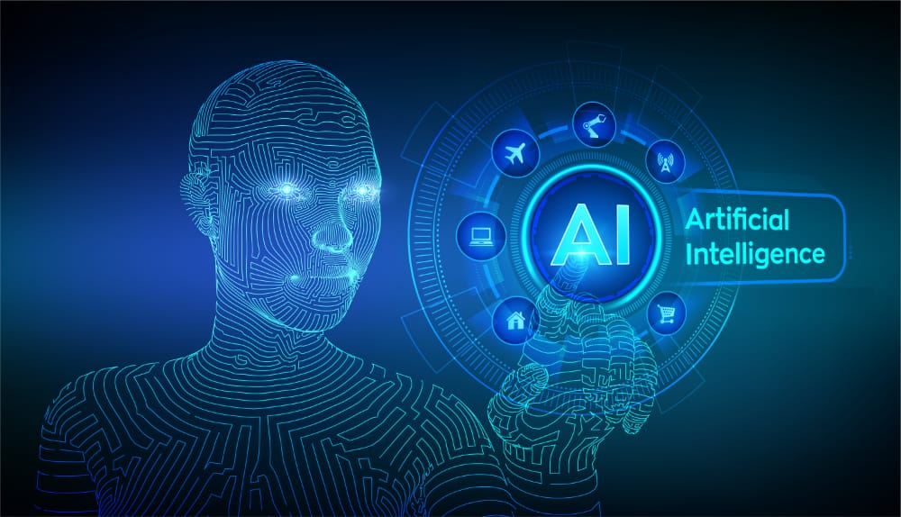

artificial intelligence
links
artificial intelligence (AI) is progressing rapidly. While science fiction often portrays AI as robots with human-like characteristics, AI can encompass anything from Google’s search algorithms to IBM’s Watson to autonomous weapons.
Artificial intelligence today is properly known as narrow AI (or weak AI), in that it is designed to perform a narrow task (e.g. only facial recognition or only internet searches or only driving a car). However, the long-term goal of many researchers is to create general AI (AGI or strong AI). While narrow AI may outperform humans at whatever its specific task is, like playing chess or solving equations, AGI would outperform humans at nearly every cognitive task.
Put simply; artificial intelligence is when machines can learn and make decisions similarly to humans. There are many types of artificial intelligence including machine learning, where instead of being programmed what to think, machines can observe, analyse and learn from data and mistakes just like our human brains can. This technology is influencing consumer products and has led to significant breakthroughs in healthcare and physics as well as altered industries as diverse as manufacturing, finance and retail. In part due to the tremendous amount of data we generate every day and the computing power available, artificial intelligence has exploded in recent years. We might still be years away from generalised AI—when a machine can do anything a human brain can do—, but AI in its current form is still an essential part of our world.
Artificial Intelligence is a technical field where sheer interest is not enough to succeed. Candidates who have high aptitude in mathematical logic are most suited to study this course. An understanding of Psychology and Neuroscience can be a huge advantage in this field. Programming languages are a must for doing well in this field.
